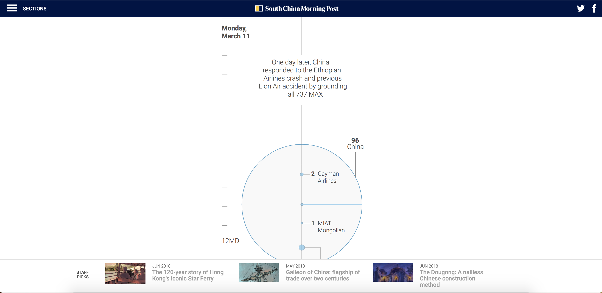
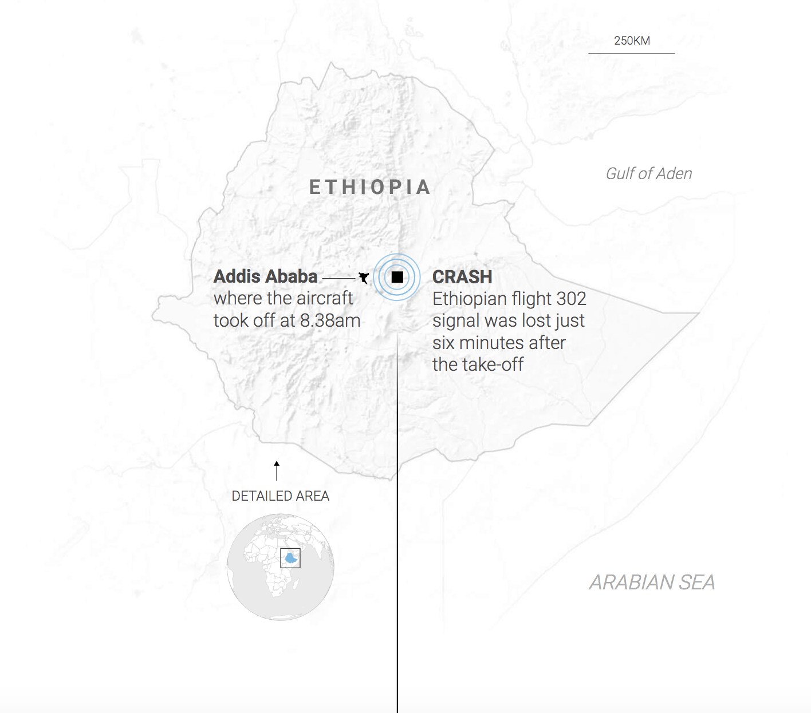

Criticise the Visuals:
How every Boeing 737 MAX was grounded in five days
Background
Link to original storyThis is a story by Pablo Robles from the SCMP. Published on 1 April, the story is about how the plane model Boeing 737 Max was grounded by all countries after two crashes of said model in five months. The author illustrated why, when, and where the aircrafts were grounded by utilising various visulisations.
In this analysis, I would like to focus on the timeline the author used to depict the chronology.
Pros
- Mobile friendly
- Shows clear chronological order of the days

First, the timeline is easily readable on both computer screens and phone screens. Second, the timeline is vertical, which is more mobile-friendly than a horizontal timeline because people are used to scrolling down their phones instead of scrolling sideways.
The timeline shows clearly the day and time of the events, with exact time.
Cons
- Takes too long to scroll
The timeline, in my opinion, requires too much scrolling to inform readers the chronology of the grounding of flights.
My take
I would like to keep the pros which I have mentioned above:
while also improving the cons:
This is my attempt:
I would like to add that this is a very simplified version of my attempt to improve the timeline. Details from the original timeline, for example, the map of Ethopia for the first event, the bubbles which indicates how many planes were grounded should be preserved.
